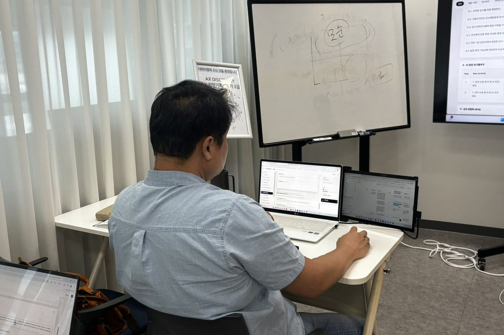
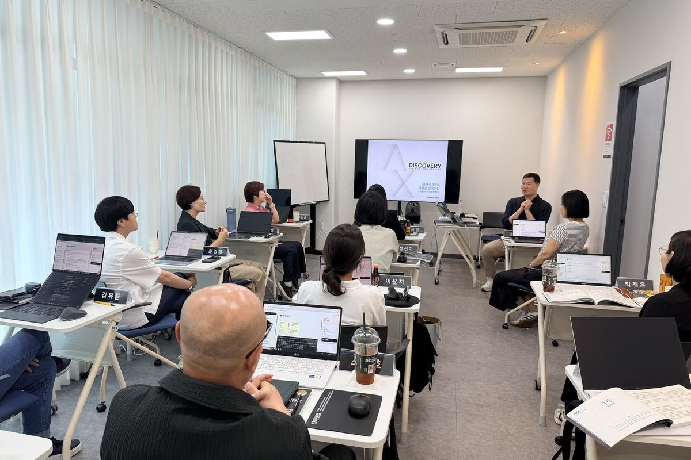
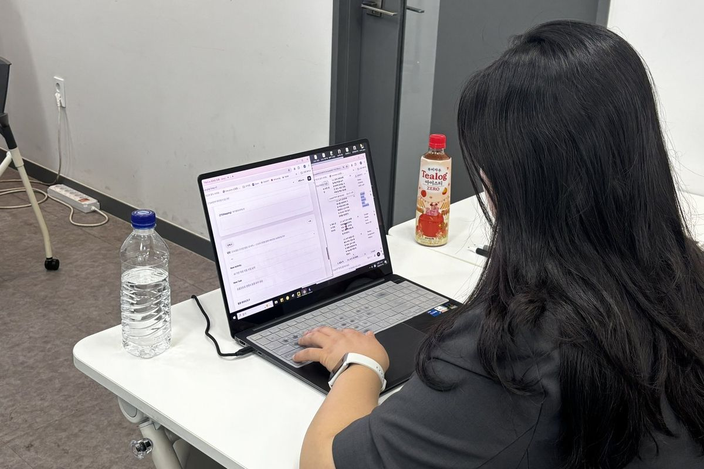
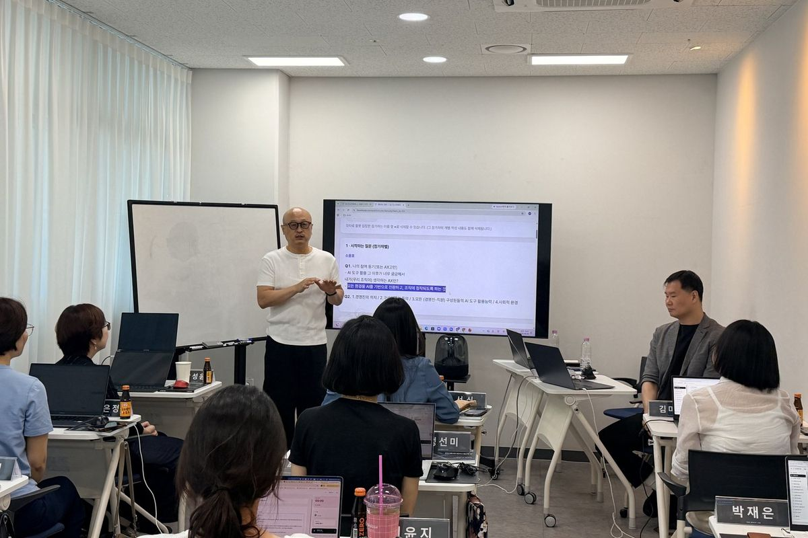
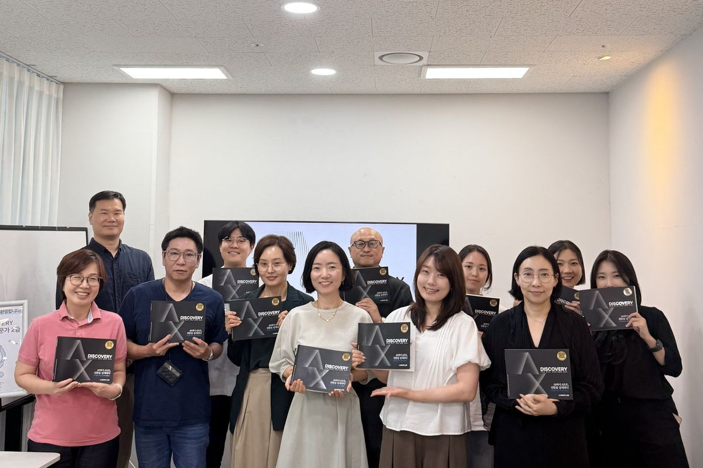

HR · 교육 담당자
전사 AX 교육을 도입하기 전, 소수 인원을 먼저 보내 커리큘럼과 산출물을 직접 검증하고 싶은 분.
내 업무의 본질을 재정의하고, 사람과 AI의 역할을 재배치해
새로운 비즈니스 가치를 만드는 2일 14시간, 업(業)의 전환 과정.
내 업무를 최소 단위로 해체(HTA)하고,
어떤 업무를 AI에 맡길지
숫자로 결정하는 방법론
내 업무의 문제를 정의하고 재설계한
TO-BE 워크플로우와 AI 에이전트 프로토타입
내 업무에 AI 전환을 적용할 수 있는
실무 역량과 AX 전략기획 전문가 2급 자격
(링크드인 연동 디지털배지)
AI 도구를 쓰는 것과 AI로 일하는 방식을 바꾸는 것은 전혀 다릅니다.
반복 업무를 AI에 맡겨 기존에 100을 쓰던 일을 10으로 줄입니다. 무엇을 줄일지 찾는 것이 HTA와 IFV의 역할입니다.
확보한 90의 자원을 어디에 투입할지 정합니다. 인원 감축이 아닌 고부가가치 업무로 재배치합니다.
재배치한 자원으로 어떤 10배의 가치를 만들지 설계합니다. 여기서 비로소 AX가 실질적인 성과로 이어집니다.
일반 사례가 아니라 본인이 매주 실제로 하는 업무를 캔버스에 올립니다.
Work → Activity → Task. 최소 단위까지 쪼개 시간이 새는 지점을 찾습니다.
강도 · 빈도 · 중요도 매트릭스로 무엇부터 전환할지 감이 아닌 숫자로 정합니다.
HITL 원칙으로 AI가 할 일과 사람이 판단할 지점을 분리해 새 흐름을 그립니다.
코딩 없이, 자체 개발 캔버스보드와 생성형 AI로 내 업무용 에이전트를 직접 만듭니다.
조별 시뮬레이션 발표와 상호 심사 후, 그 자리에서 2급 자격시험을 치릅니다.





전사 AX 교육을 도입하기 전, 소수 인원을 먼저 보내 커리큘럼과 산출물을 직접 검증하고 싶은 분.
“무엇부터 AI로 바꿔야 하는가”를 정하는 과제 발굴 · 우선순위 결정 방법론이 필요한 분.
반복 업무는 쌓여가는데, 내 팀 업무의 어디부터 AI를 붙여야 할지 판단이 서지 않는 분.
AI 구독료는 늘었는데 손익에 잡히는 성과가 없어, 투자 대비 효과를 구조적으로 점검하고 싶은 분.
AX는 조직 차원의 전략인 동시에 개인 차원의 역량입니다.
14시간 후, 회사도 나도 달라집니다.
AX 과제를 주도할 수 있는
내부 인력 확보
문제 발굴 → 정량적 우선순위 평가 → ROI 설계 → 문제정의서 작성까지 독립적으로 수행.
업무를 HTA로 해체하고 우선순위를 정한 뒤, AI와 사람의 역할을 분리한 새 워크플로우 설계까지.
에이전트 컨셉 설계 → HITL 수정·보완 → 파일럿 테스트 → 매뉴얼 문서화까지 직접 만들어봅니다.
내 직무에 AI 전환을
직접 적용하는 역량
기획·마케팅·HR·영업·법무 등 비개발 직무 누구나, 코딩 없이 AI 전환을 주도할 수 있습니다.
데이터 취합·정리·초안 작성을 AI에게 맡기고, 기획과 판단에 집중하는 일과를 만듭니다.
14시간 동안 만든 문제정의서·TO-BE 워크플로우·AI 에이전트 매뉴얼이 그대로 커리어 자산이 됩니다.
과기정통부 등록 자격증과 Open Badge 3.0 디지털 배지를 동시 취득. 링크드인에 바로 연동됩니다.
현직 인사 담당자의 실제 사례
“AI 툴을 배우지 않았습니다.
내 업무를 재설계했을 뿐입니다.”
제조업 A사 인사팀 김 과장 · 3기 수료
김 과장은 AI 사용법을 배우는 대신 자신의 취합 업무를 5단계로 쪼개는 작업(HTA)부터 시작했습니다.
그리고 알게 됐습니다. 데이터를 모으고 양식에 맞추는 단순 작업은 AI에게,
누락된 일정의 맥락을 파악해 조율하는 업무는 사람이 해야 한다는 것을.
“예전에 엑셀 매크로로 자동화를 시도했을 땐 결국 포기했습니다. 이번엔 코딩 한 줄 없이 내 업무를 설계할 수 있었습니다. 제 역할이 데이터를 붙여 넣는 일에서, 인사 이슈를 고민하는 일로 바뀌었습니다.” — 제조업 A사 인사팀 김 과장
수료 직후 진행한 만족도 조사 결과입니다.
※ AX Discovery 수료생 대상 자체 만족도 조사 결과 (5점 척도)
조직과 업무의 문제를 어떻게 재정의할 것인가, 무엇을 줄이고 무엇에 집중할 것인가를 직접 설계해 본 시간이었습니다. 2일차 마지막 자격시험까지 치르고 나니 학습 효과가 확실히 남았고, 제가 하는 HRD · 경력개발 영역에 바로 접목해 보려 합니다.
AX에서 온톨로지가 갖는 의미를 ‘참여 주체의 확대’로 이해하게 되었습니다. 현업 실무자가 자신의 업무를 직접 들여다보고 구조화하며 변화의 주체가 된다는 점이 인상적이었습니다. 처음엔 어렵던 개념이 스스로 되짚는 과정에서 한결 명확해졌습니다.
‘나는 현장에서 AX를 어떻게 이야기하고 있는가’를 스스로에게 다시 묻게 됐습니다. 많은 내용을 전달하고 끝나는 게 아니라 계속 질문하게 하고, 연결하게 하고, 결국 스스로 생각하게 만드는 과정이었습니다. 쉬는 시간 대화에서도 인사이트를 얻었습니다.
업무를 빠르게 하는 것이 아니라, 업무 자체를 다시 정의하는 것이라는 점을 체감했습니다.
사업기획 담당AI가 성공하려면 문제정의가 가장 중요하고, 결국 일하는 방법의 근본적인 변화가 필요하다는 것을 확인했습니다.
영업 / 부사장AI에게 100% 위임하는 것이 아니라, AI가 초안을 만들고 사람이 최종 검토·결정하는 TO-BE 워크플로우 구조를 알게 되었습니다.
운영 담당부서를 눌러 해당 직군의 후기를 확인하세요
AX 도입 이전에 현행 업무 Flow를 상세히 정리하고 매뉴얼화 해두는 것이 매우 중요하다는 생각이 들었습니다.
역할을 나누어 페르소나를 잘 작성하는 것이 중요하다는 것을 알았습니다. 모든 것을 다 하는 전문가는 없으니까요.
가장 도움이 된 것은 문제선정 → 목표수립 → AS-IS 워크플로우 → Impact-Effort Matrix → TO-BE 워크플로우로 이어지는 흐름이었습니다. MECE, Human in the Loop 같은 개념도 새로 알게 되었고, 생각보다 준비해야 할 것이 많다는 것을 깨달았습니다.
사용자가 AI로 생산성을 향상시키는 방법을 Bottom-up 방식으로 직접 배울 수 있었던 점이 인상적이었습니다.
작은 task로 쪼개서 에이전트를 만들어 연결하면 하나의 큰 흐름을 갖는 에이전트가 된다는 것을 알았습니다. 작은 task부터 시작해 혁신을 이어나갈 수 있는 가능성을 본 것 같습니다.
업무의 단계별 구성을 상세하게 진행하면서 얼마나 많은 일을 하고 있는지 새삼 느꼈고, AX 전환으로 상당 부분 효율화할 수 있겠다고 생각했습니다.
AI가 잘할 수 있는 영역과 사람이 개입해야 하는 영역의 구분이 필요하고, AI가 정확한 업무를 수행하도록 배경지식과 명확한 조건을 주는 것이 중요함을 인지했습니다.
현재의 문제를 바탕으로 AX 과제를 찾아가는 방법을 알 수 있었습니다. 기존에는 AI가 큰 도움이 되지 못한다고 느꼈는데, 단순히 시간을 잡아먹는 업무를 해결할 방법이 많다는 것을 알게 됐습니다. 모든 팀에 비슷한 문제점이 있다는 것도 알 수 있었습니다.
AX는 단순히 AI를 도입하는 것이 아니라, 기존 업무의 구조와 병목을 먼저 명확히 정의하는 과정이 선행되어야 한다는 점을 알게 되었습니다. 비즈니스 임팩트가 큰 영역에 전략적으로 적용하는 것이 더 중요하다는 것을 체감했습니다.
업무를 TASK 단위로 쪼개고, 각 TASK별로 에이전트를 구성해야 한다는 방법론이 많은 도움이 되었습니다.
문제 인식은 늘 갖고 있었지만 대략적인 방향성만 있었는데, 워크플로우 분석을 통해 AX 방향성을 구체화할 수 있어 좋았습니다.
생소함은 있었지만 천천히 따라가며 실무에 즉시 적용할 나만의 에이전트를 만들 수 있어 흥미롭고 혁신적인 수업이었습니다.
막연하게 알던 AI와 AX의 기본 개념을 알게 되었습니다. 배운 것을 토대로 현업에 적용해 볼 필요를 느꼈습니다.
AX 전략기획 전문가 2급
과학기술정보통신부 정식 등록 민간자격 (등록번호 2026-003156)
서랍 속에 잠드는 종이 수료증의 시대는 지났습니다.
수료 즉시 발급되는 디지털 크레덴셜은 링크드인 프로필과 이력서에 원클릭으로 연동되고,
고유 링크 하나로 발급기관과 이수 내역이 실시간 검증됩니다.
現) (주)더와이랩 대표이사
선착순 12명 마감.
이벤터스 신청 페이지로 이동합니다
부서 단위 파견은 물론, 사내 워크숍 형태의 커스터마이징 과정도 운영합니다. 인원과 목표를 알려주시면 커리큘럼을 조정해 제안드립니다.
회사 결재 · 품의용 양식입니다.